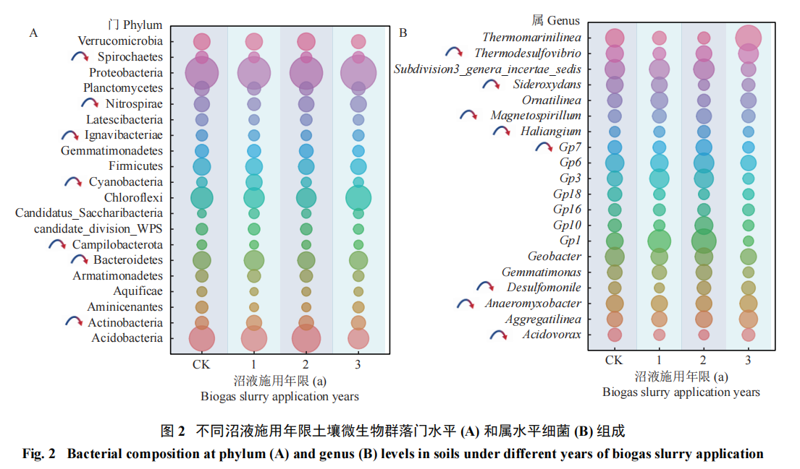
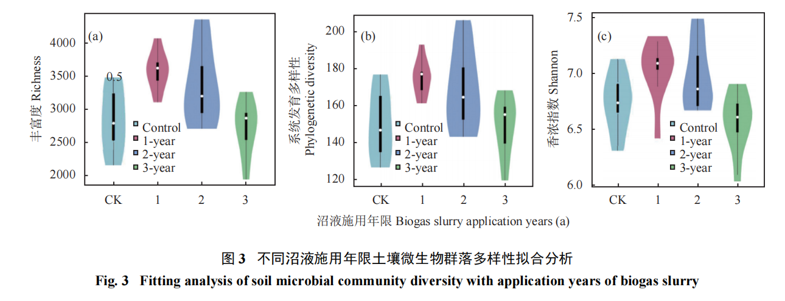

猪粪沼液还田：水稻增产提质实战指南
打通种养循环，让化肥钱留在自己口袋里
为了保证增产效果，绝不能盲目乱泼，请严格参照以下标准：
- 🌱 适用作物：水稻
- 🟤 适用土壤：水稻土（试验田为长江中下游典型水稻土）
- 💧 沼液类型：生猪养殖场粪污厌氧发酵产生的沼液（要求充分发酵、重金属不超标）
- ⏱️ 施用频率：水稻生长季内 共施用 2 次（建议在 6月插秧/分蘖期、9月抽穗/灌浆期各一次）
- ⚖️ 施用标准：单次用量约 20 吨 / 亩（即 300 t/hm²，相当于每次补充纯氮约 8 公斤/亩）
📊 核心试验数据：真金不怕火炼
口说无凭，我们直接看连续3年记录的真实对比数据：
1. 产量与大米品质对比
老乡最关心的是“打多少粮”和“好不好吃”。试验结果表明，施用沼液的水稻不但产量高，营养还更丰富，且不影响决定大米口感的直链淀粉。
| 施肥方式 | 水稻产量 (kg/hm²) | 折合老乡习惯算数 | 蛋白质含量 (g/kg) |
|---|---|---|---|
| 全用化肥 (对照组) | 7800 | 约 520 公斤 / 亩 | 58.67 |
| 施用沼液 1年 | 9669 | 约 644 公斤 / 亩 | 71.00 |
| 施用沼液 2年 | 9765 | 约 651 公斤 / 亩 | 73.11 |
| 施用沼液 3年 | 9823 | 约 655 公斤 / 亩 | 73.31 |
💡 结论总结： 连续施用3年沼液，比全用化肥增产显著，大米蛋白质含量大幅提升，且口感完全不受影响！
2. 土壤肥力与微生物变化 (越种越肥)
长期用化肥容易导致土壤板结，那么沼液呢？数据显示，沼液能显著提升地力，还能唤醒土壤里的“有益大军”：
| 施肥方式 | 有机质 (g/kg) | 速效钾 (mg/kg) | 结论 |
|---|---|---|---|
| 全用化肥 (对照) | 13.83 | 96.55 | 土壤养分一般 |
| 施用沼液 3年 | 22.01 | 276.91 | 有机质提升近60%，速效钾翻两倍多！ |
专家还对土壤里的微生物进行了DNA测序。结果显示，连用3年后，土壤里的优势有益菌群（如变形菌门，能帮植物吸收养分）比例显著增加！
👇 【科研实测图表：土壤微生物群落组成】

🚜 一线实战指导：到底该怎么泼？
想要达到专家的增产效果，绝不是随便乱泼的，建议农技人员指导老乡严格参考以下方案：
- 🎯 把准时机：水稻生长期最关键。试验中每年施用 2次。
- 6月（插秧 / 分蘖期）：打好底子。
- 9月（抽穗 / 灌浆期）：补充营养。
- ⚖️ 控制用量：单次施用量约为每亩 20吨（即原文的 300 t/hm²）。
- 说明：沼液绝大部分是水。这20吨里含有的总氮量，刚好和常规化肥的投入量相当（氮投入量约 122.2 kg/hm²），不用担心烧苗。
❓ 常见“疑难杂症”解答
(点击下方问题即可查看专家的详细解答，含科研铁证！)
🔴 痛点一：地会不会越泼越酸？
专家答：别慌，这是正常过渡期！
测定数据显示，第一年土壤酸碱度(pH)不变（5.74）；第二年确实会微降变酸（5.57）；但是到了第三年，土壤的自我调节机制启动，pH值完全恢复正常（5.83）。只要坚持科学施用，沼液不会导致土壤酸化，反而会让土壤维持高水平有机质，越来越松软。
🔴 痛点二：会不会光长叶子不结穗（贪青晚熟）？
专家答：严格控量就不会！
沼液里的“铵态氮”含量极高（占全氮92.99%），属于速效养分，水稻吸收极快。只要严格按照单次亩用20吨的标准，它的纯氮投入量和化肥对照田是一模一样的。不仅不会贪青，反而能促进谷粒饱满，蛋白质和钾含量显著提高。
🔴 痛点三：重金属会不会超标，大米还能吃吗？
专家答：源头把控是关键！
本次试验提取的沼液，铅(0.03mg/L)、镉(0.002mg/L)、铬(0.50mg/L)等均远远低于国家安全标准，没有检测到砷和汞。在实际推广中，一定要叮嘱老乡：务必使用规范化养猪场（不乱用重金属添加剂）且经过充分厌氧发酵的沼液，安全完全有保障。
🔴 痛点四：病菌会不会太多导致水稻生病？
专家答：有实测数据铁证，土壤能自我恢复！
猪粪经过沼气池的充分“厌氧发酵”后，绝大多数病原菌已经被杀死。虽然施入田里初期会打破原来的生态，但土壤的自我修复能力极强！
👇 请看下方专家的实测数据图：施用沼液第3年时，土壤微生物的多样性（香浓指数等）已经完全恢复到了和没施沼液前一样健康、稳定的水平！长期用不仅不生病，反而能提高土壤微生态环境的稳定性。

🌾 华中农业大学土壤健康与绿色农业团队 策划制作
原始试验数据支撑文献：《不同沼液施用年限土壤养分含量和微生物群落结构差异》（刘银秀, 邢佳佳 等. 植物营养与肥料学报 2023, 29(3): 483-495）